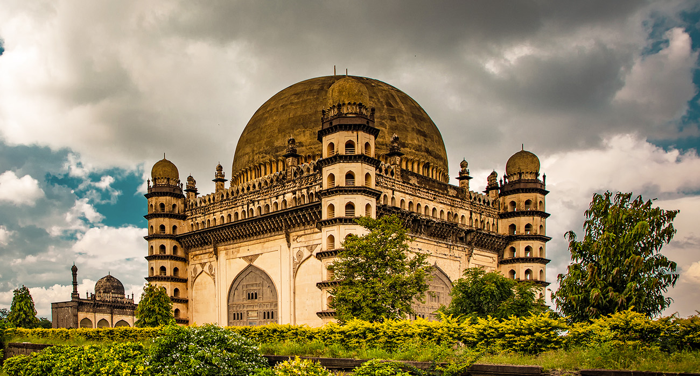

Karnataka is bordered by the Arabian Sea to the west, Goa to the northwest,
Maharashtra to the north, Telangana to the northeast, Andhra Pradesh to the east,
Tamil Nadu to the southeast, and Kerala to the southwest. It is the only southern state to have
land borders with all of the other 4 southern Indian sister states. The state covers an
area of 191,791 square kilometres (74,051 sq mi), or 5.83 percent of the total geographical
area of India.[10] It is the sixth largest Indian state by area.
With 61,130,704 inhabitants at the 2011 census, Karnataka is the eighth largest state by population, comprising 31 districts.
Kannada, one of the classical languages of India, is the most widely spoken and
official language of the state.
Characteristic Features
| Capital |
Bengaluru |
| Language |
Kannada |
| Mammal |
Asian elephant |
| Bird |
Indian roller |